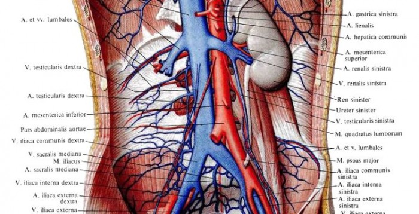

Israel and the Church: Two Halves of One Heart
Paul, exploring the "spiritual anatomy" of the Body of the Messiah, often compared it to the human body and the service of its various organs.
Read also: "The Two Shall Be One. Israel and the Church", a view from the other side.
We are speaking of the mystery hidden from former generations and revealed to Paul. The mystery of the building of the living temple, the body of the Messiah, a mystery that has given the church no rest for two thousand years now. And this mystery still remains a mystery for most, as though a veil lay over the minds of believers. We are speaking of the relationship between Jews and Greeks. We speak in the hope and trust that what was hidden from former generations and from our fathers will at last be revealed to us in the last times.
Of course, we do not present this theme, which stirs up the body of the Messiah, as the final truth, but as an attempt to understand it. Our understanding is that the two communities make up ONE (single) body of the Messiah, inseparably and unconfusedly. They are Jews and Greeks, two witnesses, two who stand before God, two olive trees, TWO HALVES OF ONE HEART.
The heart is a vital organ. In the Bible the word heart is often used figuratively, meaning the essence of the human person, the centre of soul and spirit. It is the heart that makes the spiritual decision about our relationship to God, choosing faith in Him or disobedience to Him, following His plan or not.
The call to love the Lord is addressed first of all to the heart, and only then to the soul, the will and the mind. And it is the heart that can be hardened and darkened by lack of understanding (Rom. 1:21); a "veil" of incomprehension may lie on it. That is why God seeks to write His Law in our hearts and to give us a new heart. (See the article "Heart" in the Brockhaus Bible Dictionary, in Russian.)

Paul, exploring the "spiritual anatomy" of the Community of God (the Body of the Messiah), often compared it to the human body and the service of its various organs.
That is why I turned to the heart as an image that illustrates a very important spiritual principle of the relationship within the Body of the Messiah between Israel and the Church, and their joint service as one whole.
An illustration of how two can be inseparable and yet not merge

When the human circulatory system and the heart itself are drawn, venous and arterial blood are usually distinguished by colour, the first marked blue and the second red. It makes a stunning impression to look closely at the human body, made up of many organs, each with its own function, each reached by tens and thousands of tiny blood vessels. They cannot be separated: the blue vessels of venous blood carry waste away from the body, the red arterial ones fill every organ with oxygen and nutrients. The blue do their work, the red do theirs. That is, each fulfils its own calling. And yet they work in astonishing unity, in one rhythm, the rhythm of the heart.
We all know, at least, the symbolic picture of a heart. We love to draw hearts in the sand, decorate our photos on Instagram with them, shape our hands into one. In every such symbolic picture two halves are clearly marked.

Without going into anatomical detail and terminology, let us note that the heart consists of two halves, each of which has its own function. One drives arterial blood through the body, the other venous blood. It is simply impossible to imagine the "arterial" ones one day saying to the "venous" ones: "Guys, come over to us, sign up as 'arterial', we have so much oxygen!" It might seem a more honourable service to deal with arterial blood, rich in nutrients, than with venous blood, which carries waste out of the body. But only when each does its own job is the heart able to work in harmony and keep the whole body alive.

If we turn to history, this is exactly the state of affairs we find, when one half (the church from the nations) decided that the other half (the service of Israel, the community of the circumcised) was no longer needed. Now the Church supposedly replaces Israel, and Israel's calling has lost its meaning.
THE HEART DOES NOT WORK THAT WAY! It can only work the way the Creator designed it.
True, there are medical pathologies in which a baby is born with a single chamber in the heart, so that venous and arterial blood mix in it. But such a baby is doomed from birth. Even with modern life-support technology, such a baby cannot expect more than two or three months. And all of its short "life" will be very unstable and painful.
This is just what we observe when we study the history of the Church. The exception was a very short historical period, while the apostles were alive and both halves of the "heart", Jews and Greeks (the Community from the Circumcision and the Community from the Nations), functioned normally. Then, quite soon, the Jewish half was destroyed by the other, more numerous community from the nations. As a result, for two thousand years now "the baby has been in a fever", thrown into various very unstable and dangerous states.
Today we are witnessing the restoration of the original "anatomy" of the Community of God, as the Most High restores Israel in its calling, as the destroyed half of the "heart" is supernaturally revived. God is restoring the structure He designed from the beginning, described by the prophet Zechariah (chapter 4: two olive trees feeding the lampstand with oil).
The question is: what is the position of each of us in this process? What do you think, how do you see the situation?
***
Read also the article "The Two Shall Be One. Israel and the Church"
A video episode on this theme:
Watch the full version of the video HERE (in Russian).
See also the video "Israel and the Church. Shulamit. The Dance of Two Camps" (Song 6:13).
 Shulamit. The Dance of Two Camps (Song of Songs 7:1)
Shulamit. The Dance of Two Camps (Song of Songs 7:1) Israel and the Church. First Love
Israel and the Church. First Love